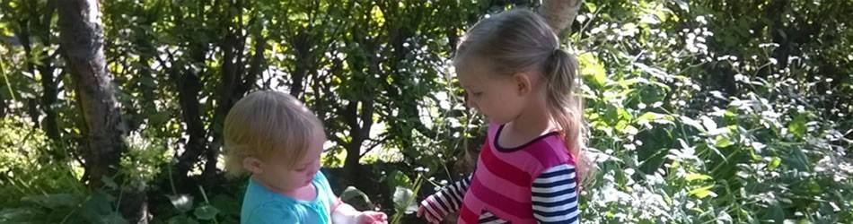

Um mig
Ég heiti Sandra, ég verð 24 ára núna 11. maí. Ég er fædd og uppalin í Reykjavík. Ég er nýbyrjuð aftur í námi eftir að hafa hætt 2010, flutti svo til Noregs 2011 og er nýlega komin aftur heim. Ég á stelpur fæddar 2010 og 2012 og einn laumufarþegi á leiðinni.
Áhugamál
Ég hef mikinn áhuga á tölvum og tækni, gamalli og nýrri og hef alltaf verið sérstaklega hrifin af gömlum tölvuleikjum og tölvum en það er mun auðveldara að finna nýrri tölvur og leiki heldur en gömlu. Annars hef ég mjög gaman af borðspilum, teiknimyndasögum og bókum, þá sérstaklega spennu-ævintýra
